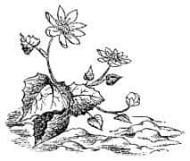

Lucy Barfield’a
Sevgili Lucy,
Bu hikâyeyi senin için yazdım, ama yazmaya başladığımda çocukların kitaplardan daha çabuk yaşlanacağını hesaplamamıştım. Sonuç olarak sen, şu anda peri masalları için çok büyük yaştasın ve bu kitap basılıp ciltlendiğinde daha da büyümüş olacaksın. Fakat bir gün tekrar peri masalları okumaya başlayacak kadar yaşlı olacaksın. O zaman bu kitabı üstlerdeki bir raftan indirip, tozunu alıp, hakkında ne düşündüğünü söylersin bana. Ben muhtemelen seni duymayacak kadar sağır, söylediğin kelimeleri anlamayacak kadar yaşlı, fakat hâlâ seni seven vaftiz baban olacağım.
C.S. Lewis
